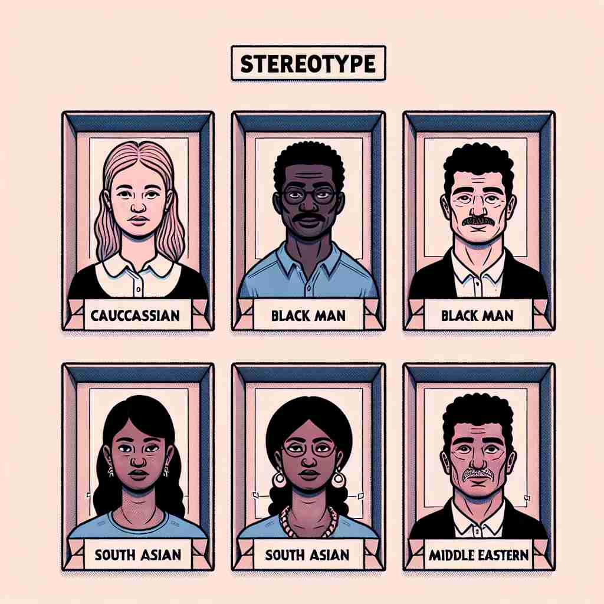

💬 We must work together to break down stereotypes about different cultures. 我们必须共同努力打破对不同文化的刻板印象。

💬 Many people believe in a social stereotype about different ethnic groups. 许多人相信关于不同民族群体的社会刻板印象。
💬 We must work together to break down stereotypes about different cultures. 我们必须共同努力打破对不同文化的刻板印象。
💬 Many people believe in a social stereotype about different ethnic groups. 许多人相信关于不同民族群体的社会刻板印象。
🧠 想象'stereotype'是一个印刷模板，它总是产出相同的图案。这个核心概念体现在所有含义中：无论是对人群的固化印象，还是印刷技术，都强调了'固定'和'重复'的特性。记忆时，可以想象用模板快速复制出相同的印象或图案，这种固化和重复正是'stereotype'的核心。
🔈 ['sterɪə(ʊ)taɪp]['stɪərɪə(ʊ)-]
🗝️ n. a fixed, oversimplified idea of a particular type of person or thing 对某种类型的人或事物的固定、过于简单化的观念
🎭 在一个热闹的咖啡厅，一群朋友正围坐在一起聊天。一位朋友提到新同事时说：'她是个典型的程序员，总是戴着眼镜，穿着T恤。'其他人在一旁点头，似乎在用刻板印象来快速形成对新人的印象。
💬 The media often perpetuates stereotypes about different ethnic groups. 媒体常常助长对不同族群的刻板印象。
🌳 词根 "stereo-" 来自希腊语，意为 "固体的" 或 "立体的"，词缀 "-type" 来源于希腊语 "typos"，意为 "形状" 或 "模型"。整体词意为 "固化的形象或模型"，即固定不变的印象或成见。
💡 记忆 "stereotype" 的时候，可以联想词根 "stereo-"（立体）和 "-type"（类型）的组合，想象一个固定立体的形象，这有助于理解其固化印象的含义。
🗝️ v. to form a fixed, oversimplified idea of (a person or group) 对某个人或群体形成固定、过于简单化的看法
🎭 在一间高中教室里，老师正引导学生讨论不同文化。一个学生说，'我以前觉得所有的法国人都只吃面包和奶酪，但后来发现并不是这样。'这种想法就是他们之前对法国人的刻板化固有印象。
💬 We shouldn't stereotype people based on their appearance. 我们不应该根据外貌来给人贴标签。
🤔 将名词的概念转化为动作
🗝️ n. a method of printing from a plate 一种从版上印刷的方法
🎭 在一个古老的印刷厂，工人正在操作一台老式印刷机。他将铅板小心地放在机器上，准备使用铅版印刷技术来制作当天的报纸。这种古老的方法也被称为铅版印刷。
💬 The newspaper used stereotype printing for mass production. 报纸采用刻板印刷进行大规模生产。
🤔 源自词的原始技术含义，指一种印刷技术
🗝️ n. something that conforms to a fixed or general pattern 符合固定或一般模式的事物
🎭 在一个时尚设计工作室，设计师展示了新一季的服装系列。学徒注意到几件衣服都遵循着一种重复的图案，设计师解释道：'这是我们这一季的标志性风格，符合一般化设计的标准模式。'
💬 His behavior is a stereotype of a typical teenager. 他的行为是典型青少年的刻板印象。
🤔 从印刷技术引申到符合固定模式的事物